Your AI quotas,
right in the menu bar.
Remaining quota and reset countdowns for Claude Code, Codex, Cursor, Windsurf, Grok, GLM and 21+ services, all in one place. Provider credentials stay on your Mac. If you enable Apple-device sync, only an allowlisted AES-256-GCM encrypted quota snapshot moves through your own iCloud account.
macOS 14+· Universal (Apple Silicon + Intel)· Version 1.3.4 · Universal Mac
Mac: Developer ID signed and notarized. iPhone beta: iOS 18+, with the Mac companion and the same iCloud account.
Latest Release
Multiple Claude accounts, one popover
Version 1.3 adds isolated Claude account profiles and puts the popover's Liquid Glass under your control — while credentials keep living where they always have: in each tool's own storage.
Isolated Claude account profiles
Sign in through the official Claude CLI and keep each account separate: refresh, rename, pause or remove any profile on its own, with currency-safe balance summaries. Credentials are never copied into TokenRemain storage.
Liquid Glass, your way
Choose frosted or clear Liquid Glass for the menu-bar popover and tune its backdrop opacity independently — the same live glass you see at the top of this page.
Readable on any glass
Primary, secondary and muted text stay on protected light foregrounds in both glass styles, while provider identity and semantic warning colors come through untouched.
Sturdier snapshots and profiles
A malformed scoped-limit row can no longer reject an otherwise valid encrypted mobile snapshot, and managed Claude profiles never fall back to the system account's credentials.
Real UI
Mac, iPhone, wrist — one design language
You've met the menu bar popover above — rendered live in your browser, not a screenshot — everything below is a live screenshot of the latest build: the desktop Dashboard, the redesigned iPhone app and the Apple Watch glances. Numbers are SF Mono on every surface; decoration is gone, hierarchy comes from type. The iPhone and watch shots run the built-in demo scenario, so they carry its DEMO mark.
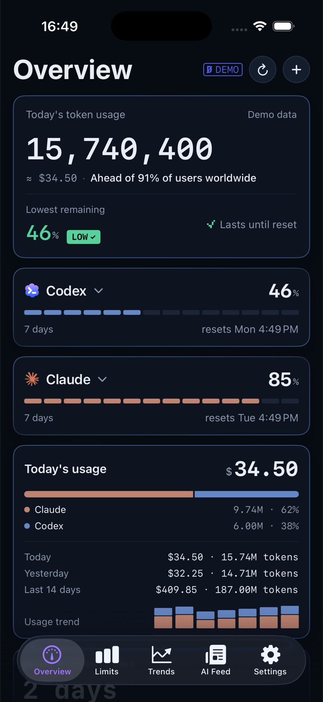
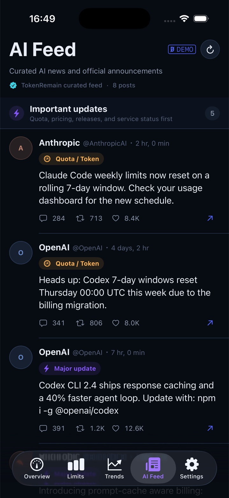
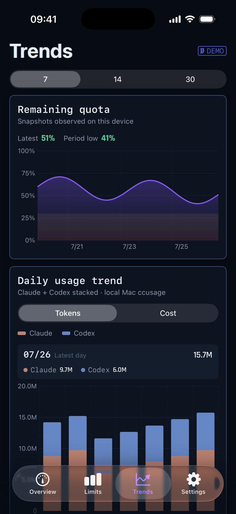
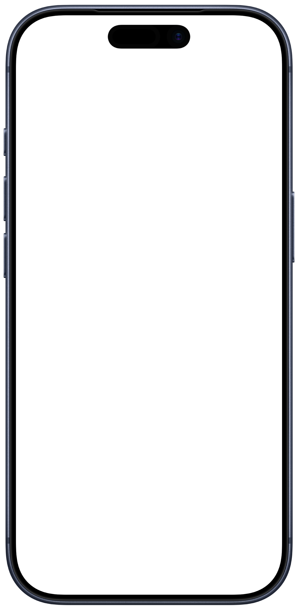
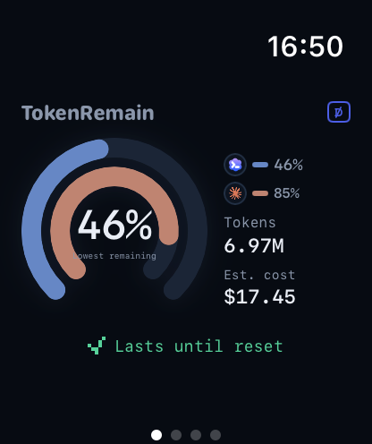
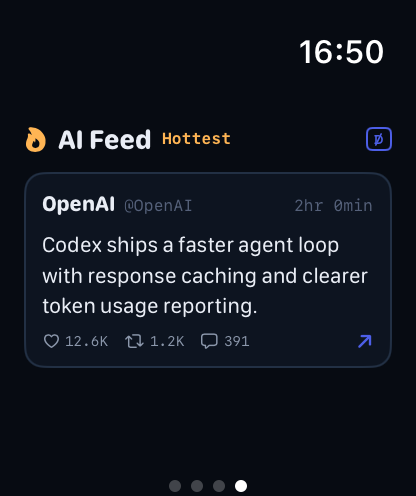
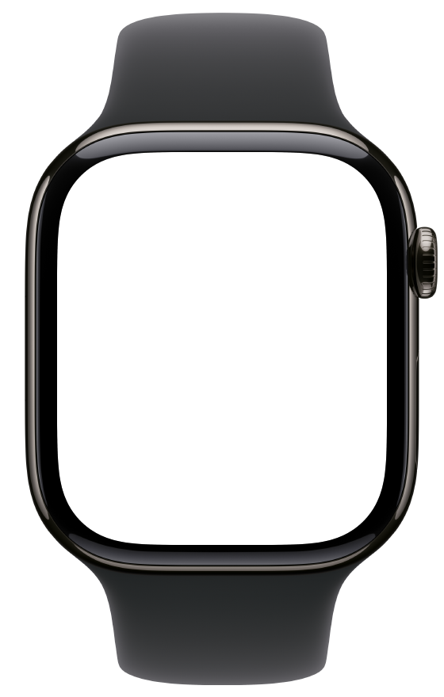
Apple WatchFrosted open-arc gauges on the wrist: lowest remaining in the centre, one provider arc each, today's tokens and cost beside — plus an AI Feed page and watch-face complications.
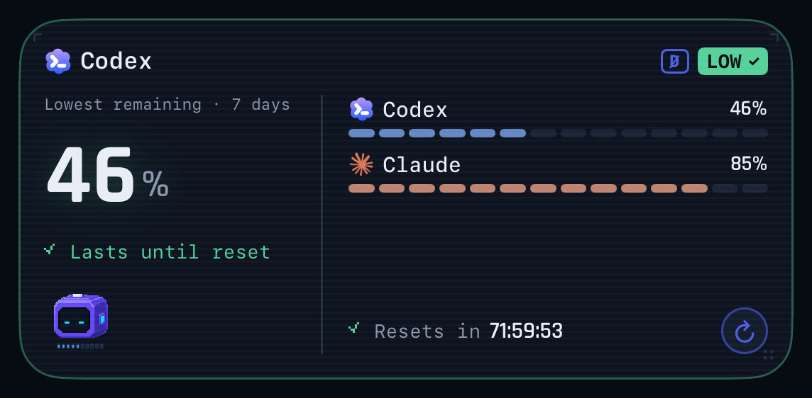
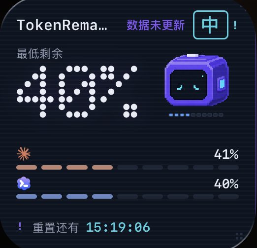
Supported Providers
Supported services
Most services connect automatically the moment you're signed in: TokenRemain only reads credentials that already live on your machine — no extra login, no token refreshing. Every card says where its data comes from.
Official windows stay under Claude; external routes such as DeepSeek keep the Claude card while naming the API that owns the balance.
Official windows stay under Codex; custom model providers keep the Codex card while naming the API that owns the quota.
Monthly billing-cycle quota and reset countdown. Read-only queries of state.vscdb.
Weekly pool remaining. Reads the Grok CLI's existing credentials.
 DeepSeekAPI KEY
DeepSeekAPI KEYPay-as-you-go account balance. The key lives only in your Keychain.
 KimiAPI KEY
KimiAPI KEYCoding session / weekly windows, via API key or kimi-auth. Stored only in your Keychain.
Coding Plan session / weekly windows, on the Global or China endpoint you choose. The key lives only in your Keychain.
China-region Team Plan quota pools. The JSON config lives only in your Keychain.
Monthly credits. Reads your local GitHub sign-in.
WindsurfAUTODaily / weekly quotas from Windsurf's read-only local login state.
Prepaid credit balance, official spend and per-key limits.
Quota pools, plus optional Claude / third-party pools. Reads the local sign-in state.
Go plan usage stays local; configured third-party providers keep the OpenCode card while naming the API quota source.
New API-compatible account balance APIs or a custom balance endpoint. The config lives only in your Keychain.
 MiniMax
MiMo Code
Qoder
Kiro
Volcengine
MiniMax
MiMo Code
Qoder
Kiro
Volcengine
 Ollama
Ollama
Credential locations and endpoints for every service are documented in the repo README; pace prediction uses real window progress and official reset times to judge whether your current pace lasts until reset.
AI Feed
The AI news that moves your quota, pre-sorted
A curated feed of AI-industry posts, read straight inside the app — a full reading tab on iPhone with an on-device archive, a glance page on Apple Watch, a panel on the Mac Dashboard. Quota, rate-limit and reset changes get pinned to the top and pushed as notifications; ordinary industry chatter stays quiet below. No X account, no login, no keyword soup.
A fixed, curated roster — not an algorithm
Tier one follows official and first-party voices (@claudeai, @AnthropicAI, @OpenAI, @sama…) checked every 10 minutes. Tier two rotates a fixed 12-account whitelist ranked by real engagement. Original posts only — replies, reposts and quotes are rejected.
Two priorities that actually matter
TOKEN RESET — quota, rate-limit or reset changes; MAJOR UPDATE — big model, API or price moves. Both are pinned and trigger a notification. Everything else scrolls by quietly as NORMAL.
Reads like a public bulletin board
The app fetches the curated result as public data from the TokenRemain broadcast service. Your provider credentials, usage numbers and identity are never attached to the request — the feed doesn't know who you are.
Notifications on your terms
Major-update notifications are optional and delivered through macOS / iOS system notifications. Turn them off and the feed simply stays a reading list.
Claude usage limits now reset every five hours.
📌 PINNED · NOTIFIED
Introducing our next frontier model — rolling out to all paid plans this week.
📌 PINNED · NOTIFIED
Long-horizon agents are mostly a memory problem now, not a reasoning problem.
— Illustrative sample items —
Data Security & Privacy
Privacy isn't a promise. It's the architecture.
Every line below is a verifiable technical fact, not privacy-policy boilerplate — you can trace each one in the source.
Read-only credentials, never refreshed
Reads the access tokens your tools already maintain. Refresh tokens are never touched, nothing is written back — no fighting Claude Code or Cursor for their sessions.
Keys live in the Keychain
Manually added API keys (Z.ai, OpenRouter…) are stored only in the macOS Keychain — never in source, bundles or logs.
No credential relay
Quota queries go straight to each provider's official API. The public feed, push service, and aggregate download counter never receive provider credentials; optional Apple-device sync uses your private iCloud database.
No behavioral tracking
No telemetry, ads, cookies, or analytics SDK. The website keeps only one anonymous aggregate Mac download count.
No account required
You never sign up for TokenRemain — being signed in to your local tools is enough.
Cache and stats stay local
Mac caches and cost statistics stay local. Only when you enable sync does an allowlisted, encrypted display snapshot enter your private iCloud database.
- Provider credentials — read in place, never copied out.
- API keys — macOS Keychain only.
- Usage cache & cost stats — computed and kept locally.
- Allowlisted quota snapshot — percentages, countdowns, risk level.
- AES-256-GCM encrypted before it enters your private database.
- Off by default — one switch, and only between your own devices.
- One anonymous integer — the aggregate DMG download count.
- The public AI feed — served to every client identically.
- Never received — credentials, usage numbers, or identifiers.
Brand
A logo that works for a living
The robot isn't decoration — its face is a gauge. One mascot drives the popover, Dashboard, iPhone app and widgets; your lowest remaining quota picks one of its eleven expressions. Meet them all:
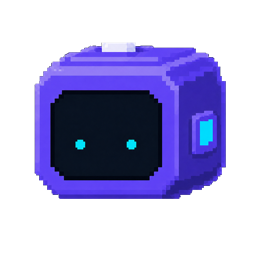
DRAG — OR PICK A SPRITE BELOW
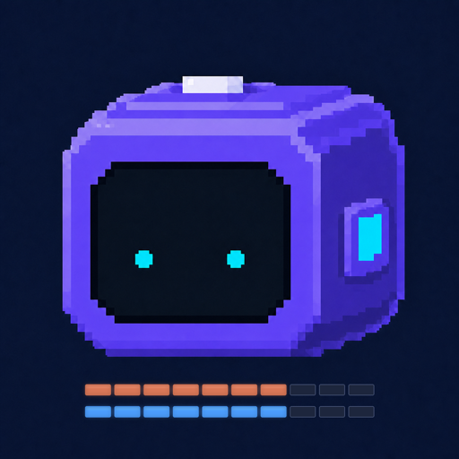
App icon macOS · iOS · watchOS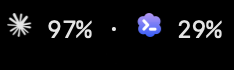
Menu bar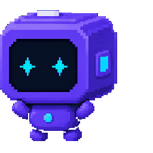
Mascot · motionAll marks shown at their production aspect ratios — nothing cropped, stretched or recolored. Provider glyphs (Claude starburst, Codex petals) follow each provider's official identity and never bleed into TokenRemain's own violet / cyan.
Current Release
Known limits of the Mac release
The notarized Mac release is available now. These limits are deliberate trade-offs — data safety always outranks feature coverage.
- CHIPUniversal Mac build — supports Apple Silicon (arm64) and Intel (x86_64).
- OSRequires macOS 14 Sonoma or later; macOS 26 gets native Liquid Glass, 14/15 fall back to the dark card style.
- DISTThe public DMG is Developer ID signed and Apple notarized. It is currently distributed outside the Mac App Store.
- DEPSDirect quota queries need the matching tools signed in on this Mac (Claude Code, Codex CLI, Cursor…); services that aren't signed in show setup hints. Z.ai is the only one that needs a pasted API key.
- ESTCost figures are API list-price estimates, not your subscription bill; when a credential expires, data pauses and the app tells you how to recover.
Features
Keep your pace in hand
Pace prediction
Real window progress plus official reset times decide whether you'll make it to reset — with an ETA when you won't.
Menu bar & floating window
Choose which apps show in the menu bar; refresh every 1/5/15/30 min or manually; a floating window stays on top across Spaces.
Today's cost estimate
ccusage counts today's tokens and estimated API cost, split by provider, all computed locally.
AI feed
Quota resets, rate-limit changes and major model releases get pinned and trigger local macOS notifications. →
Release
Download and install
Download the notarized DMG
Use the official button above. The download is signed with Developer ID and notarized by Apple.
Move TokenRemain to Applications
Open the DMG and drag TokenRemain into the Applications shortcut.
Open and choose your providers
Launch TokenRemain from Applications, choose the local tools you use, and optionally enable Apple-device sync and daily AI feed notifications.
All source, in the open
How credentials are read and where data goes — every line is auditable. Issues and PRs welcome.github.com/Carstin520/token-remain